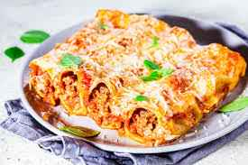

canelones

Description
Hoy os traigo una receta de canelones de carne muy fácil de hacer. Es una de las recetas de pasta típicas de las abuelas y de las madres, siempre apetece un domingo tomar unos canelones en casa de la yaya. Soy un amante de las recetas de pasta, ya sea pasta rellena o cualquier pasta fresca, como la lasaña de carne o unos buenos espaguetis a la carbonara tradicionales
En mi opinión creo que son muy laboriosos, por eso cada vez más la gente joven no lo suele hacerlos. En algunas regiones como en Cataluña son muy típicos, y se suelen tomar en Navidad. En este post os voy a explicar los diferentes rellenos para los canelones cómo algunas ideas chulas para hacer unos canelones originales, y cómo hacer una salsa bechamel perfecta, ya que creo que es algo fundamental en unos buenos canelones.
Ingredients
- 500 gramos de carne picada (mezcla de ternera y de cerdo)
- Una cebolla
- Un pimiento verde
- Salsa de tomate casera o tomate frito de bote
- 20 placas de pasta
- Queso rallado para gratinar
- Para la bechamel
- 100 gramos de mantequilla
- 100 gramos de harina
- Un chorrito de aceite de oliva
- Un litro de leche
- Especias al gusto
- Sal
Steps
- Para hacer canelones caseros comenzaremos con el relleno.
- Pochamos la cebolla y el pimiento verde a fuego lento.
- Una vez pochado agregamos la carne picada, salpimentamos
- Agregamos la salsa de tomate casera.Dejamos cocinar unos cuatro o cinco minutos, retiramos del fuego y reservamos.
- Por otra parte cocemos las láminas de pasta como indique el fabricante. En este caso yo las he cocido con un chorrito de aceite para que no se peguen. Normalmente la pasta no se le suele echar aceite porque sino la salsa no se adhiere bien con la pasta pero en este caso para que no se peguen entre unas y otras echaremos aceite en el agua.
- Una vez que lo tengamos ya cocido la ponemos en un paño de algodón y procedemos a rellenarlos. Ponemos una pequeña cantidad de carne en la lámina de pasta y cerramos con mucho cuidado.
- Con el horno precalentado, colocamos en una fuente de horno todo los canelones formados y cubrimos con la salsa bechamel y con queso rallado. La receta de la bechamel os la dejo para que podáis hacerla y seguir los consejos que indico en el post. Introducimos al horno a 200º durante unos 10 minutos y terminamos los últimos 3 minutos con el gratinador.